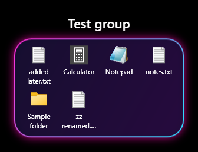
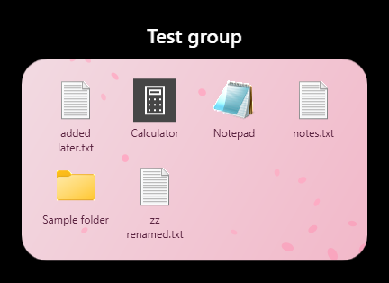
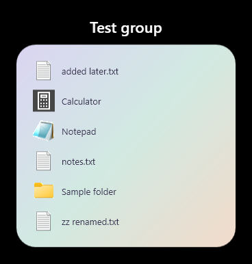

Folders for your desktop,
the iPhone way.
DesktopGroups turns a desktop icon into a group. Its tile shows what's inside, and a double-click opens a themed panel right next to it.



A tidy desktop that still feels like yours
Real desktop icons
Groups sit on your desktop like any other shortcut. Arrange and sort them as usual, and they stay put with Win+D.
Live tiles
Each group's icon shows up to nine of the things inside, and updates when they change.
Opens beside the icon
Double-click an item to open it. Click anywhere else, or press Alt+Tab, and the panel closes.
Drag and drop both ways
Drop files onto a group or its panel to move them in. Drag them out to put them back.
A theme for every group
Neon Tokyo, Sakura, Pastel, Light, Dark, Frosted glass, any tint, or your own picture. Falling petals or sparkles if you like, plus icon size, grid or list, and more.
Stays out of the way
It runs in the background with no window and no tray icon.
Set it up in a minute
- Install the .NET 8 Desktop Runtime (x64) if you don't have it.
- Download the zip and unzip it to a folder you like.
- Run DesktopGroups.exe.
- Right-click the desktop → New → Desktop group.
Questions
Anything else? Ask on GitHub.
Where do my files go?
Into the group's own folder, %AppData%\DesktopGroups\<group>. Drag them out of the panel any time to put them back on the desktop.
What happens when I delete a group?
Its items go back to your desktop first, then the group is removed.
How do I change a group's look?
Open the group, right-click inside the panel and pick Settings…. Theme, layout, where the panel opens, rename and delete are all there.
Can it start with Windows?
Yes. Start with Windows and Quit are in the panel's right-click menu.
Does it work on Windows 10?
It's tested on Windows 11 (24H2 and later).